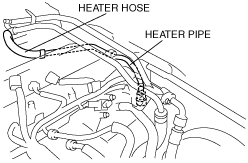

Workshop Manual ➭ ENGINE ➭ INTAKE-AIR SYSTEM[L8, LF] ➭ INTAKE-AIR SYSTEM REMOVAL/INSTALLATION [L8, LF]
INTAKE-AIR SYSTEM REMOVAL/INSTALLATION [L8, LF]
id0113a3801900
Warning• A hot engine and intake-air system can cause severe burns. Turn off the engine and wait until they are cool before removing the intake-air system.
• Fuel line spills and leakage from the pressurized fuel system are dangerous. Fuel can ignite and cause serious injury or death and damage. Fuel can also irritate skin and eyes. To prevent this, always complete the “Fuel Line Safety Procedure”, while referring to the “BEFORE SERVICE PRECAUTIONS”. (See BEFORE SERVICE PRECAUTION [L8, LF].)
1. Remove the battery cover. (See BATTERY REMOVAL/INSTALLATION [L8, LF].)
2. Disconnect the negative battery cable. (See BATTERY REMOVAL/INSTALLATION [L8, LF].)
3. Remove in the order indicated in the table.
4. Install in the reverse order of removal.
5. Add the engine coolant to the cooling system filler neck and the coolant reserve tank to replace that during servicing.
6. Inspect the engine coolant level. (See ENGINE COOLANT LEVEL INSPECTION [L8, LF].)
7. Inspect for engine coolant leakage. (See ENGINE COOLANT LEAKAGE INSPECTION [L8, LF].)
Step 1
|
|
 amxzzw00002618
amxzzw00002618|
1 |
Air cleaner cover (See Air Cleaner Cover Removal Note.) |
|---|---|
|
2 |
Air cleaner element |
|
3 |
Air cleaner case |
|
4 |
Quick release connector (Type B) (See QUICK RELEASE CONNECTOR (EMISSION SYSTEM) REMOVAL/INSTALLATION [L8, LF].) |
|
5 |
Air hose (See Air Hose Removal Note.) |
|
6 |
Fresh-air duct (See Fresh-air Duct Removal Note.) |
Step 2
|
amxzzw00002619 |
|
1 |
Throttle body (See Throttle Body Removal Note.) (See Throttle Body Installation Note.) |
|---|---|
|
2 |
Quick release connector (Type A) (See QUICK RELEASE CONNECTOR (EMISSION SYSTEM) REMOVAL/INSTALLATION [L8, LF].) |
|
3 |
Dynamic chamber (See Dynamic Chamber Removal Note.) |
|
4 |
Intake manifold (See Intake Manifold Removal Note (With Variable Tumble System).) |
Air Cleaner Cover Removal Note
1. Remove the MAF/IAT sensor. (See MASS AIR FLOW (MAF)/INTAKE AIR TEMPERATURE (IAT) SENSOR REMOVAL/INSTALLATION [L8, LF].)
1. Move the purge solenoid valve slightly out of the way. (See PURGE SOLENOID VALVE REMOVAL/INSTALLATION [L8, LF].)
1. Remove the front bumper. (See FRONT BUMPER REMOVAL/INSTALLATION.)
Warning• Turn off the engine and wait until it is cool. Even then, be very careful when removing the cap. Wrap a thick cloth around it and slowly turn it counterclockwise to the first stop. Step back while the pressure escapes.
• When you are sure all the pressure is gone, press down on the cap using the cloth, turn it, and remove it.
Caution• Do not plug the water hose with a sharp-edged object. Otherwise, the hose could be damaged.
1. Wrap a clean cloth around the cooling system cap and release the pressure by loosening the cap slowly.
2. Remove the water hose from the throttle body and plug the water hose quickly.
3. Remove the throttle body.
1. Remove the plug hole plate. (See PLUG HOLE PLATE REMOVAL/INSTALLATION [L8, LF])
2. Follow “BEFORE SERVICE PRECAUTION” before performing any work operations to prevent fuel from spilling from the fuel system. (See BEFORE SERVICE PRECAUTION [L8, LF].)
3. Remove the service hole cover.
(1) Remove the front suspension tower bar (joint), (right side) and (left side). (See FRONT SUSPENSION TOWER BAR REMOVAL/INSTALLATION.)
(2) Remove the wiper arm. (See WIPER ARM AND BLADE REMOVAL/INSTALLATION.)
(3) Remove the cowl grille. (See COWL GRILLE REMOVAL/INSTALLATION.)
(4) Remove the side cowl grille. (See SIDE COWL GRILLE REMOVAL/INSTALLATION.)
(5) Move the cooler pipe No.3 and heater pipe slightly out of the way.+-----------------------------------------------------------+ | amxzzw00002620 | +-----------------------------------------------------------+
(6) Remove the service hole cover. (See EGR VALVE REMOVAL/INSTALLATION [L8, LF].)
4. Disconnect the heater hose and move the heater pipe slightly out of the way.
|
amxzzw00002621 |
5. Disconnect the heater hose and move the heater pipe slightly out of the way.
|
 amxzzw00002622 |
6. Remove the harness bracket.
|
amxzzw00002623 |
7. Remove the under cover. (See TRANSVERSE MEMBER REMOVAL/INSTALLATION.)
8. Disconnect the variable intake air solenoid valve connector, variable tumble solenoid valve connector, EGR valve connector, CMP sensor connector and PSP switch connector.
9. Disconnect the ignition coil connector and fuel injector connector and move the harness slightly out of the way.
10. Disconnect the quick release connector from the fuel distributor. (See QUICK RELEASE CONNECTOR (FUEL SYSTEM) REMOVAL/INSTALLATION [L8, LF].)
11. Remove the fuel distributor. (See FUEL INJECTOR REMOVAL/INSTALLATION [L8, LF].)
12. Disconnect the water hose from the EGR valve.
13. Disconnect two water hoses from the thermostat.
14. Remove the heater hose and heater pipe from the dynamic chamber.
15. Remove the variable intake air solenoid valve. (See VARIABLE INTAKE AIR SOLENOID VALVE REMOVAL/INSTALLATION [L8, LF].)
16. Remove the variable tumble solenoid valve. (See VARIABLE TUMBLE SOLENOID VALVE REMOVAL/INSTALLATION [L8, LF].)
17. Remove the dynamic chamber installation bolts.
18. Remove the EGR pipe.
|
amxzzw00002624 |
19. Disconnect the connector from the A/C compressor.
20. Disconnect the knock sensor connector.
21. Move the vacuum hose between the purge solenoid valve and the charcoal canister slightly out of the way.
22. Move the clutch release cylinder slightly out of the way. (MT) (See CLUTCH RELEASE CYLINDER REMOVAL/INSTALLATION.)
23. Disconnect the evaporative hose with the dynamic chamber raised.
|
|
 amxzzw00002625
amxzzw0000262524. Remove the dynamic chamber.
25. Remove the variable intake air shutter valve actuator. (See VARIABLE INTAKE AIR SHUTTER VALVE ACTUATOR REMOVAL/INSTALLATION [L8, LF].)
26. Remove the MAP sensor. (See MANIFOLD ABSOLUTE PRESSURE (MAP) SENSOR REMOVAL/INSTALLATION [L8, LF].)
Intake Manifold Removal Note (With Variable Tumble System)
1. Remove the intake manifold.
2. Remove the variable tumble shutter valve actuator. (See VARIABLE TUMBLE SHUTTER VALVE ACTUATOR REMOVAL/INSTALLATION [L8, LF].)
Throttle Body Installation Note
1. Tighten the bolts in the order as shown in the figure.
|
amxzzw00002626 |
Throttle body tightening torque
8.0—11.5 N·m {82—110 kgf·cm, 71—100 in·lbf}
2. Remove the plug from the water hose and install the water hose to the throttle body quickly.